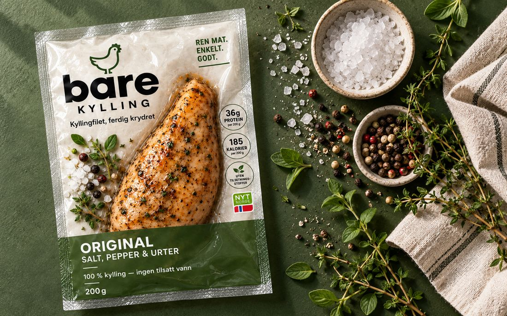
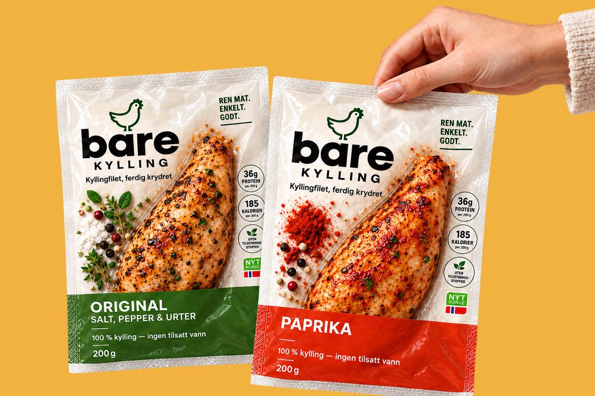
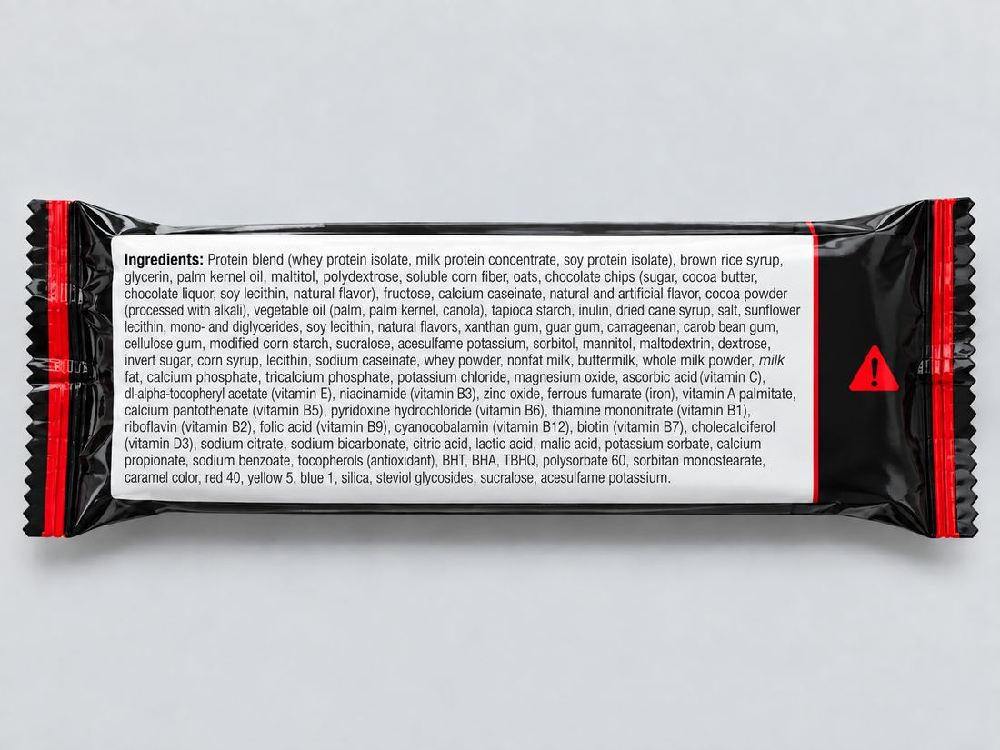
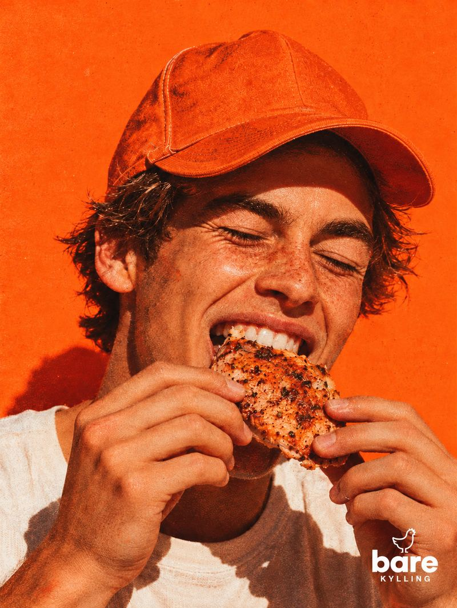
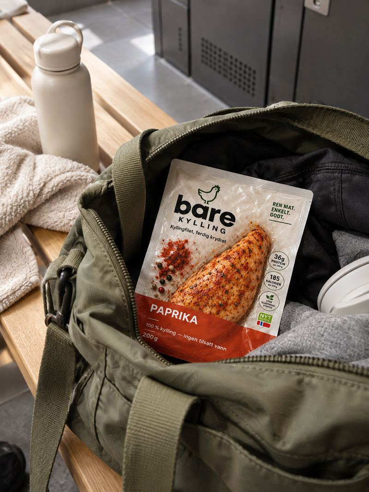
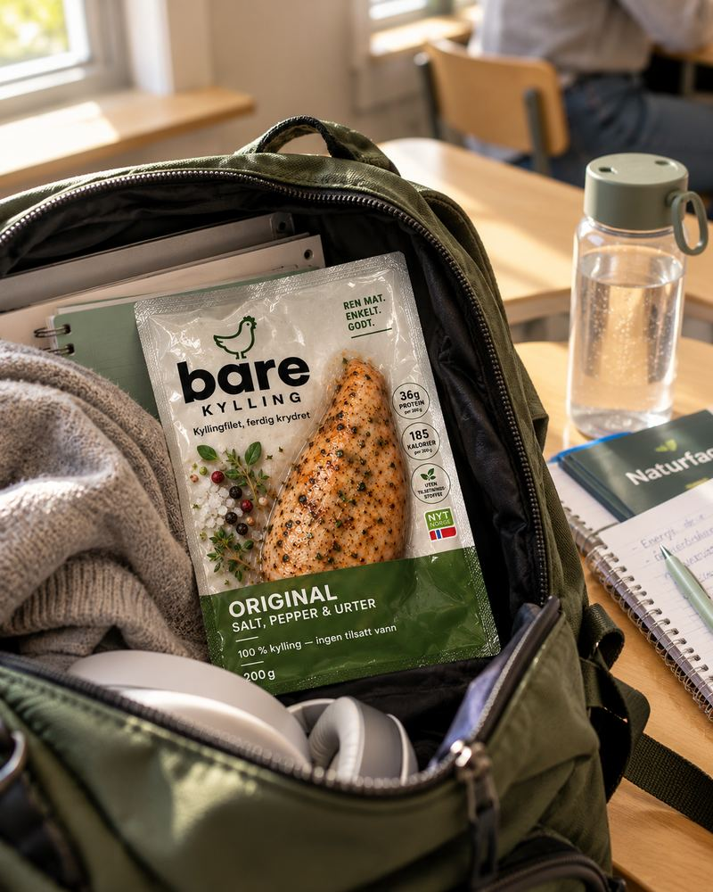
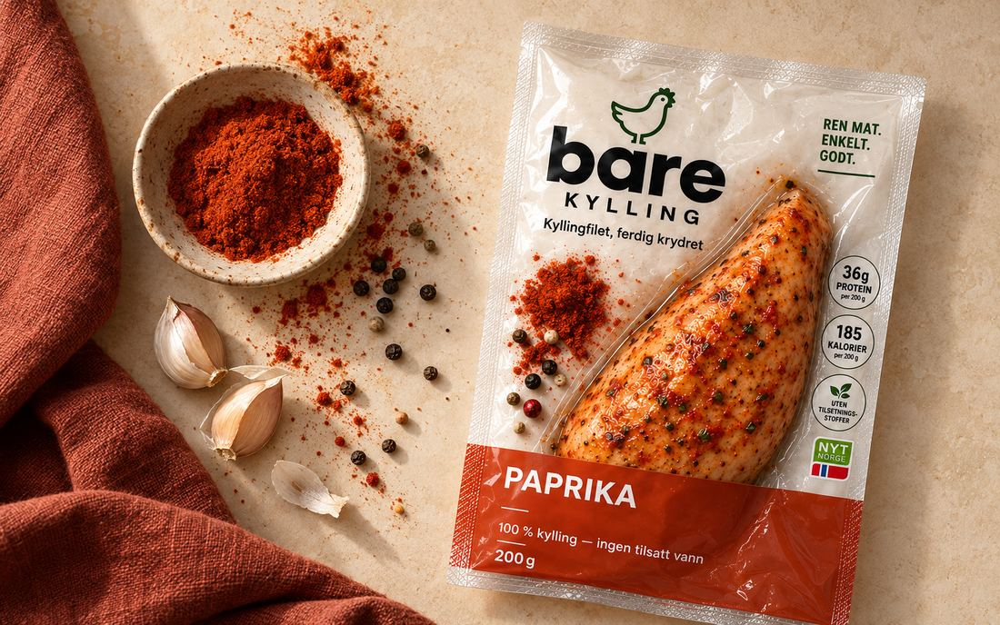
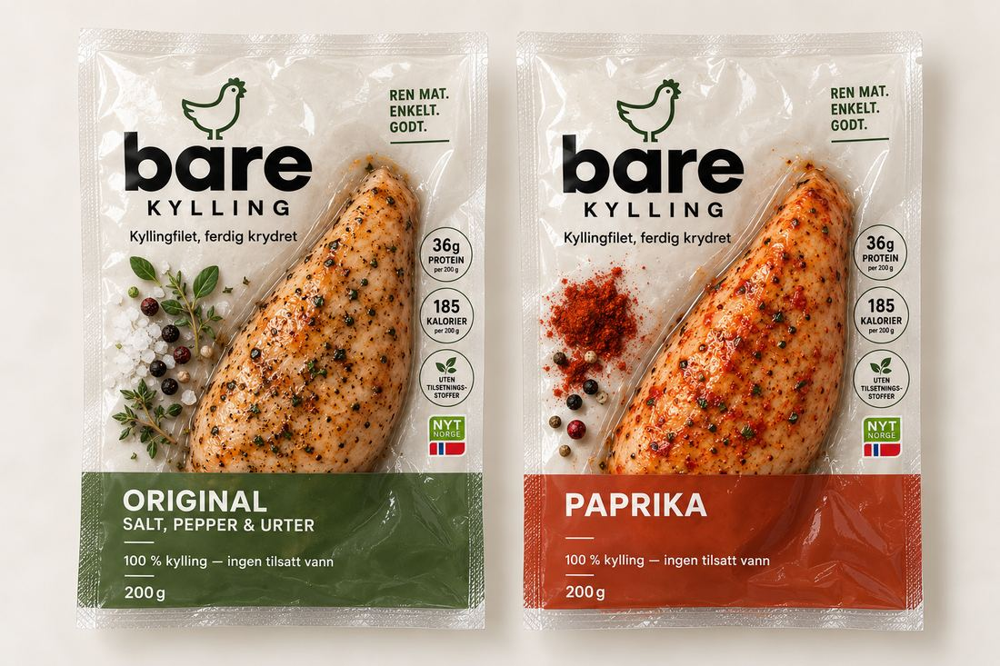

Salt & Pepper
Enkel og klassisk. Salt og pepper som lar kyllingen smake kylling.
- Salt
- Pepper
Ferdigstekt kylling · to smaker
Ekte kylling, stekt og krydret på forhånd. Åpne pakken, spis, fortsett dagen.


Problemet
Når du trenger noe mettende mellom måltidene, blir det fort en bar, en shake eller et pulver. De har sin plass – men noen ganger vil du bare ha mat.
Ekte mat. Ekte protein.
Bare Kylling er kyllingfilet som er stekt og krydret før den pakkes. Like lett å ta med som en bar – bare laget av kylling.
Sammenlign
Fire vanlige valg når du trenger noe mettende og ikke har tid til å lage mat.
| Kriterium | Bare Kylling | Proteinbar | Ferdigmiddag | Takeaway |
|---|---|---|---|---|
| Hva det er | Kyllingfilet med krydder | En bar – innholdet varierer | En porsjonsrett | Mat fra en restaurant |
| Protein per porsjon | Oppgis etter analyse | Varierer – se pakken | Varierer – se pakken | Varierer |
| Kalorier per porsjon | Oppgis etter analyse | Varierer – se pakken | Varierer – se pakken | Varierer |
| Tilberedning | Ingen – ferdigstekt | Ingen | Må som regel varmes | Bestilling og ventetid |
| Kan spises kald | Ja | Ja | Som regel ikke | Varierer |
| Tar liten plass i sekken | Ja – flat pakke | Ja | Nei – skål eller brett | Nei |
Proteinbarer, ferdigretter og takeaway varierer mye – sjekk næringsdeklarasjonen på det konkrete produktet. Tallene for Bare Kylling publiseres når næringsanalysen er ferdig.
Derfor
Hele stykker kyllingfilet med krydder – ikke pulver, ikke bar.
Stekt og krydret før den pakkes, så du slipper å lage noe.
Laget for å smake godt rett fra pakken – varm den bare hvis du vil.
Flat pakke som glir ned i sekken, treningsbagen eller vesken.
Ingen bestikk, ingen tallerken og ingen oppvask etterpå.
Klar emballasje, så du ser kyllingfileten før du åpner den.
Når som helst
Etter trening, i friminuttet eller mellom to møter. Ingen panne, ingen mikro, ingen matboks.



Og på jobb, på bussen og på vei hjem.
Smakene
Den samme ferdigstekte kyllingfileten, krydret på to måter.

Enkel og klassisk. Salt og pepper som lar kyllingen smake kylling.

Rund og lett søt. Paprika gir farge og fylde, honningen runder av.

Kvalitet
Emballasjen er klar, så du ser kyllingfileten før du åpner den.
Kyllingfilet og krydder – og honning i Paprika & Honning. Den fullstendige ingredienslisten publiseres når resepten er låst.
Opprinnelsesland og leverandør oppgis her når avtalen er på plass.
Kommer før lanseringHvordan kyllingen produseres og kontrolleres, beskriver vi her når første batch er i produksjon.
Kommer før lanseringNæringsinnhold
Åpne en smak for å se næringsdeklarasjon, ingredienser og allergener.
| Næringsinnhold | Per 100 g | Per pakke (200 g) |
|---|---|---|
| Energi | – | – |
| Fett | – | – |
| hvorav mettede fettsyrer | – | – |
| Karbohydrat | – | – |
| hvorav sukkerarter | – | – |
| Protein | – | – |
| Salt | – | – |
Tallene fylles inn når næringsanalysen fra laboratoriet er klar.
Kyllingfilet krydret med salt og pepper. Den fullstendige ingredienslisten med mengder publiseres når resepten er låst.
Oppgis når resepten er låst.
| Næringsinnhold | Per 100 g | Per pakke (200 g) |
|---|---|---|
| Energi | – | – |
| Fett | – | – |
| hvorav mettede fettsyrer | – | – |
| Karbohydrat | – | – |
| hvorav sukkerarter | – | – |
| Protein | – | – |
| Salt | – | – |
Tallene fylles inn når næringsanalysen fra laboratoriet er klar.
Kyllingfilet krydret med paprika og honning. Den fullstendige ingredienslisten med mengder publiseres når resepten er låst.
Oppgis når resepten er låst.
Spørsmål og svar
Nei. Den er ferdigstekt og kan spises rett fra pakken. Vil du ha den varm, kan du varme den – anvisningen står på pakken når produksjonsmetoden er låst.
Holdbarheten fastsettes sammen med produksjonen og trykkes på pakken. Vi legger den ut her så snart den er bekreftet.
Oppbevaringsanvisningen fastsettes sammen med produksjonen. Vi oppgir den her og på pakken før lansering.
Vi oppgir opprinnelsesland og leverandør her så snart avtalen er på plass.
Kyllingfilet er naturlig rik på protein, men det nøyaktige tallet oppgir vi først når det er målt gjennom næringsanalyse. Da står det i næringsdeklarasjonen.
Produktet er ikke i salg ennå. Sett deg på lista, så får du beskjed så snart vi vet når og hvor.
Kommer snart
Første batch er under arbeid. Legg igjen e-posten din, så får du én beskjed når Bare Kylling er klar – og hvor du får tak i den.
Vi maser ikke. Vi sier bare fra.